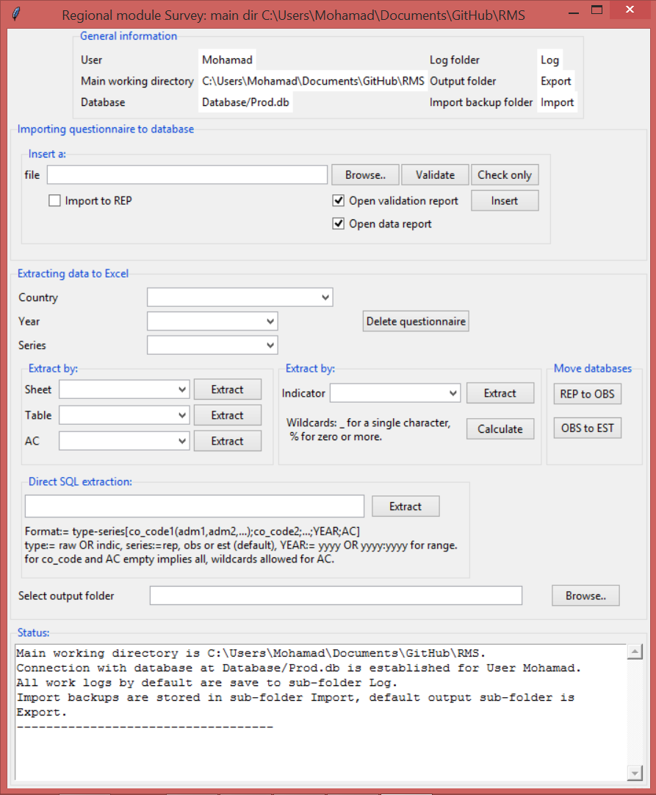
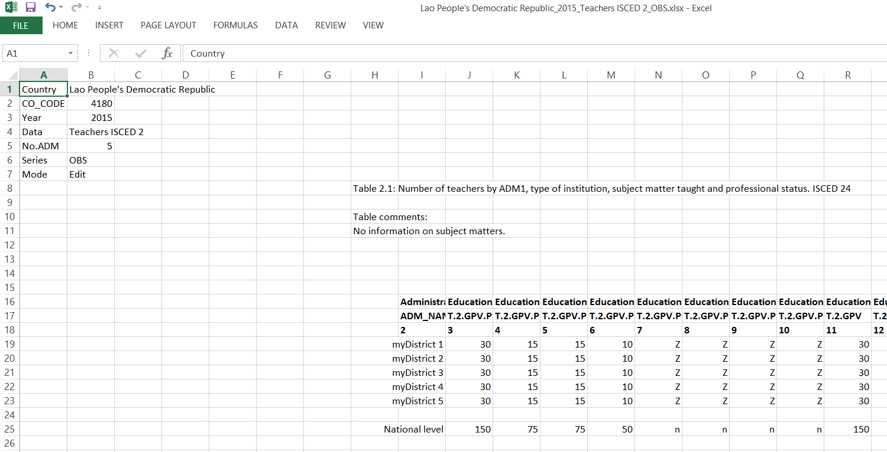

Regional Module Graphical User Interface (GUI) User Guide
Table of Contents

Figure 1: Screen shot of RM_GUI.
This document explains how to use the management system GUI of the Regional Module. There are four main frames in the GUI that could be seen in Figure 1.
- General information: general session and user information as the user-name and database location, log, …
- Importing questionnaire to the database: tools to import a single questionnaire of a folder of questionnaires.
- Exporting data to Excel: tools to export and visualize the data that are already in the database.
- Status: a panel that outputs updates on the carried procedures, including any errors.
Each frame has a specific subsection below that explains in details how to use the available tools.
1 General information
This frame holds information that are essential for all tools in other frames, and will be used all over this guide.
- User prints the automatically retrieved user name from the windows login information.
- Main working directory is the path of the main folder where all the other mentioned subfolders are located.
- Database shows the path to the physical database(
.dbfile). In Figure 1 it is in the subfolderDatabaseof main folder as indicated by/Database/Prod.db. For example if the main directory is/Desktop/RMSthen the database file is at/Desktop/RMS/Database/UISProd. - Log folder holds error and processing logs every time a user attempts to write, read or move data. It is also a subfolder of the main directory. See Section 5 for more details.
- Output folder is the default folder where exported Excel workbooks are save if no other folder is specified.
- Import backup folder holds backups of every imported Excel workbook. A copy of the Excel workbook is saved with with time and date stamps attached to its name.
- Data in the General information frame are only editable from the scripts, not from the GUI.
- Only the Export folder is editable through the export panel.
2 Importing questionnaire to the database
Two ways exist to importing questionnaires.
- Importing a single questionnaire is done by clicking on the
Browse..button that is adjacent tofilelabel. Select a file and then click the adjacentImportbutton. - Importing a folder of questionnaires is done by clicking on
Browse..button that is adjacent tofolderlabel. Select a folder and then click on the adjacentImportbutton.
In both cases, each file is first validated with pre-precessing checks
to make sure that it conforms with the coding scheme. Validation logs
will appear in the Status frame and also a report is written in the
Log folder.
For more details about the pre-processing report please refer to 5 section.
- Note that only files with
.xlsxextensions are imported. - All imported files are copied to the
Exportsubfolder with time and data stamps attached to their names to indicate the time of importing.
3 Exporting data to Excel
3.1 Choosing a country name, year and series
The Country drop-down list will only show names of countries with
data already in the database. This drop-down list has a live connection to the database, thus if one imports a questionnaire for a new country as shown in a previous section, the country's name should appear in the drop-down list.
Once a country name is selected, the Year drop-down list shows years
with available questionnaire data for the selected country.
The series drop-down list has three options:
- Reported (REP): where the original questionnaire is inserted,given that no person has changed or modified any of the data in this series. It is advised to only modify data in the Observed series.
- Observed (OBS): where the persons could modify and validate the data.
- Estimated (EST): where the disseminated data set should be.
3.2 Moving data between series
An original questionnaire is always imported to the Reported series, to move it the Observed or Estimated series, choose first the country and year, and then click on the button in the Move between databases frame.
REP to OBS would move the data from Reported to Observed series.
OBS to EST would move the data from the Observed to Estimated series.
3.3 Exporting options
This section is important because is contains many necessary details to understand how the whole GUI works.
There are three ways to export the data, sheet only, table only and alphanumeric code only. Each way has its own down-down list.
- Sheet: a drop-down list of all exportable questionnaire sheet names. Once a sheet is selected click on the adjacent
Exportbutton to export it to a new Excel workbook. To export all available sheets selectAllfrom the drop-down list. - Table: a drop-down list with all tables of the questionnaire. By selecting one and clicking on the adjacent
Exportbutton an new Excel workbook is created that holds the selected table. - AC: a drop-down list with all alphanumeric codes (AC) that are in the questionnaire. By selecting one and clicking on the adjacent
Exportbutton a new Excel workbook is created that holds the data.
The exported workbooks are by default saved to Export subfolder with
the naming convention County Name-Year-Exported Variable-Series.xlsx. Users
can change where to save exported files by selecting a folder in the option
Select output folder as seen in the Exporting data to Excel frame
in Figure 1.
Also there are two viewing modes, an Edit and a Read only mode.
Editmode: allows users to edit the data, comments and inclusions in the Excel sheet and re-import them to the database as shown in Importing questionnaire to the database section. This works by preserving the table locations exactly where they are in the original questionnaire. Users will notice that created Excel workbook looks very similar to the original questionnaire. DO NOT move tables from their original location, change the sheet name, or delete any of the data in the configuration panel in the top left corner as seen in Figure 2. You are only allowed to modify cell figures, comments and inclusions. The configuration panel is necessary to re-import the data.Read onlymode: facilitates the viewing of the data by shifting tables to the left part of the Excel worksheet to avoid unnecessary scrolling. However, the mode will not allow users to re-import the data back in the database, since the tables or alphanumeric codes are not in the exact location as they are in the original questionnaire.

Figure 2: Screen shot of the top left corner of an exported Excel sheet which shows the configuration panel.
The viewing mode is chosen by the software. It is set to Edit mode
if a sheet or the whole questionnaire is exported, otherwise it is set
to Read only mode. Users can know the mode by looking at the
configuration panel in any Excel sheet as seen in Figure 2.
4 Status frame and Log subfolder
The Status frame is a read-only text box that prints errors and
status of procedures. Some of the outputs are also recorded in the
Log subfolder see the next section.
5 Processing report
A pre-processing report is created every time one attempts to import a
questionnaire. It includes all confirmations and errors and have the naming convention as RM-Country Name-Year-Series-Data-Type-Time-Date.txt. Some the data included in the report is also printed in the Status frame and Log subfolder.
The idea of the pre-processing report is to list errors and data problems exist before inserting the questionnaire. Only if all the data checks pass the questionnaire is imported.
The pre-processing step validates the below conditions, all failed
conditions are printed to the Status frame to a log file
in the Log subfolder.
- If the import is in the original questionnaire format
- all checks in the
Checking sheetmust be passed.
- all checks in the
- If the import is not in the original questionnaire format
- worksheet must be in
Editmode - no data cell is empty
- all cells must have proper coding, that is
Xfor inclusion,mfor missing,Zfor inapplicable - all columns must sum to the national level total
- all sub-category must sum to the total. For example, public and private data must sum to the total of public and private
- all partial category data must be less than or equal to totals. For example, female data must be less than or equal to total of male and female
- data in configuration panel must be correct, that is country name, code, year and no. of administrative divisions
- tables and column numbers must be in the correct place
- worksheet must be in
6 A complete example
6.1 Importing the original questionnaire
To give an example consider importing a made-up questionnaire say for Laos for year 2015 that
is saved in a file Desktop/Example/LAOS-2015-Regional_Survey.xlsx, as seen in
Figure 3. First start the RM_GUI.py select the file
and click the adjacent Import. The Status frame should show

Figure 3: Laos original questionnaire submission.
Importing C:/Users/myUser/Desktop/Example/LAOS-2015-Regional_Survey.xlsx Date: 08/03/15 Questionnaire path: C:/Users/myUser/Desktop/Example/LAOS-2015-Regional_Survey.xlsx All the checks passes. QUESTIONNAIRE CAN BE PROCESSED Import successful...Done
This implies the import is successfully. In addition a backup file and a log file are creates in:
- backup file:
RMS\Import\RM_Lao People's Democratic Republic_2015_15-08-08-21-54.xlsx - log file:
RMS\Log\Lao People's Democratic Republic_15-08-08-21-54.log
6.2 Moving to and exporting from the Observed series.
After a successful original import, one can move the data from
Reported to Observed series. Notice that Laos now appears in the Country drop-down
list. Select Laos and the corresponding year, then
click on REP to OBS button. The Status frame should show this.

Figure 4: Laos data moved from REP to OBS.
Now, let's export Teachers ISCED 2 for cleaning. Select the country,
year and series from the drop-down lists and from the Sheet
drop-down list select Teachers ISCED 2 and before clicking on the
adjacent Export button, select the output folder to be your
Desktop. The Status frame will have the confirmation seen in box
1, and the Excel workbook should look like this. Notice the configurations in the top left corner, where the mode is Edit and the series is OBS.
Exporting Teachers ISCED 2 from OBS series for Lao People's Democratic Republic-2015.... File C:/Users/myUser/Desktop/Example/Lao People's Democratic Republic_2015_Teachers ISCED 2_OBS.xlsx is created.. Done.

Figure 5: Exported Laos data from observed series.
6.3 Cleaning and re-importing
As mentioned before as long as the configuration panel is left
untouched and all tables are not moved, one can go ahead and change
the data, inclusion codes and insert cell and table comments. For
example, assume for some reason Laos-2015 data we prefer to only
report the data under T.2.GPV.Pu in
col 2 and not to report T.2.GPV.Pu.F in column 3. We do this by
inclusion code. Also we add a comment that the data
is aggregated by programme team. See Figure 6 and compare it to Figure
5.

Figure 6: Modified Laos data from observed series.
To import follow similar step as in Section 2. Start the RM_GUI select the modified file and import
it. If successful the Status frame should show
Importing C:/Users/myUser/Desktop/Example/Lao People's Democratic Republic_2015_Teachers ISCED 2_OBS.xlsx Import successful...Done
otherwise it would list validation errors such as.
Pre-processing validation failed. Some errors exist see log file in: Log Importing C:/Users/myUser/Desktop/Example/Lao People's Democratic Republic_2015_Teachers ISCED 2_OBS.xlsx Column 14 in table Table 2.2 has improper values.
Since import is successful a backup file and log file are also creates
- backup file:
RMS\Import\RM_Lao People's Democratic Republic_2015_15-08-08-22-10.xlsx - log file:
RMS\Log\Lao People's Democratic Republic_15-08-08-22-10.log
Now if you re-export the whole questionnaire, Teachers ISCED 2
sheet, or only Table 2.1 from the observed series, you should be
able to see the changes and comments made earlier.